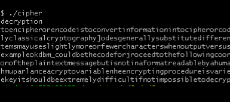

Above is my double Pendulum, and the code for which can be found on my GitHub under my personal-website repository. I coded it in Javascript as a fun project because I found the path of it to look really awesome and wanted to experiment with it and let others too! I am working towards making it customizable, but currently, the "stats" button can be clicked at any time during the animation to give the current value such as the angles each arm of the pendulum is at and what their respective velocities are.
While studying crpytography in a number theory course, I became interested in crpytography. It is an extremely useful tool for encoding things - that is why cryptography comes to play in cybersecurity and cryptocurrency.
The vinegre cipher, a more complex variant of the caesar cipher, is by no means secure but made for a good project. The idea behind certain ciphers is to interfere with frequency analysis, which at its base level, can never be avoided unless the language is made up.
My project, on GitHub as vinegre-cipher, was written in C++ with the idea that a brute force attack would be faster in a lower level language. So, it of course has the basic functionality of takin a text file or a string and encoding it or decoding it given a keyword. The more interestng part, however, is decryption without a given key.
First, I looked at spacing between collections of letters. Specifically, I searched the encrypted message for sequential letters that appeared multiple times throughout in the same order. I ran this for sequences of letters of length 2,3,4,5, and so on, also known as n-grams. Once I found the spacings, I would take the greatest common denominator of them since the spacing could be any multiple of what the actual key length is.
One problem of using a GCD is that it may simplify too much. If the key length is say for, the gcd would always return two. So, my program takes multiples of the gcd to determine possible key lengths.
Finally, with possible key lengths, my program compares all the newly found key lengths, and all the possible shifts ('a' - 'z'), for each index individually with the frequency analysis of leters in the english language. My program also outputs the top two results for each index of the word as frequency analysis isn't perfect, especially with shorter messages. Below is an example with screenshots of the inputs and command line outputs of my program encrpyting and then decrpyting the message without giving the program the key.

Program strips punctuation and spacing and shifts all letters to lowercase. Snippets of the text and its encryption are shown below.


Upon running the programs solver, the program decided that the key length is a multiple of two and tried various ones (2,4,6, and 8). As you can see, there are two columns of letters; frequency analysis isn't perfect and so the program gives two options for each index.

Using the key highlighted above, we run our decrypt function and our progam outputs the original text!
Towards the end of my time as a Teachin Assistant for an MIT program, a student asked me to mentor them in their captsone project: create an artificial intelligence for chess. They were aware of my background in chess and so I gladly accepted. In order to give that student a jumping off point I spent that very night creating a somewhat simple yet effective chess algorithm.
The complexity of chess comes in because of the exponential amount of possible game states. The moves in a game can be represented by b^d where b are the amount of possibles moves on a given turn and d is the amount of turns played. A brute force search would be very limited by this time complexity to where the optimal move could be found looking around 8 moves ahead. Now, this is still rather good performance but not good enough to completely be better than any human player.
However, an alpha-beta pruning algorithm, which is a minimax tree search optimization, can reduce the search complexity of chess from b^d to around b^(d/2). Essentially, if you were able to look 8 moves ahead, you can now look somewhere around 16 moves ahead, which is a serious performance boost.
Take a look at this graphic. It is incredibly informative, and I will try and break down what it means so that it is easier to digest.

First off, the basic algorithm lying at the root of what we are trying to accomplish is just a simple tree iteration where you continue down the nodes until a node no longer has any children and then recursively make your way back up the tree. You can see that each level of the tree alternates between min and max, which represents the two different players in chess. If it is white's turn, they want to maximize their gain from that turn while black wants to make moves counter white, or minimize the score white can receive. For example, if white makes a capture, white will have a large increase in score. Then for black's turn, black can minimize that score by capturing back (assuming that doesn't lead to an even worse position). So, when we initialize the tree each node will start as empty except for the leaves. Once the tree traversal reaches a leaf, you run an evaluation function on the game assuming that the moves associated with all the previous nodes have been made. Now, refering back to the graphic above, looking at the leftmost part of the tree (the tree traversal starts on the leftmost side because we are doing an in order traversal). The player looking to maximize the score chooses three over two since that is bigger. This score now gets passed up as a new alpha and a new beta. What these variables keep track of are global records of the best possible path for the minimizer (beta) and the best possible path for the maximizer (alpha) assuming that both players are making the best moves possible. So, after the maximizer chooses three, the minimizer knows that the best they can do is guaranteed to be three or less. Additionally, at the level above that, the maximizer knows they can get at least three. Because alpha and beta values get sent from the bottom up, if beta changes and becomes two, that will also get passed up to the alpha value telling the maximizer that they can get a score of AT LEAST two.
Where the optimization comes into play is where you see the branches that are labeled as cut. Looking at the leftmost branch that was cut, the leaf directly to its left had a value of five. Because it is the maximizer's turn at this level, this value gets passed up such that the maximizer can get at least a score of five. But, at the level above, the minimizer has kept track of the other nodes and knows that they can get a score of three, if not less. Because of this, the minimzer would never choose a move that corresponds to the tree where the maximizer can get at least 5 instead of only 3. Therefore, it doesn't even matter what the cut out leaf evaluated to. While saving on this one move seems trivial, as the process continues, entire sections of the tree become irrelevant, greatly speeding up the algorithm.
Now, there are many complexities such as having an uneven search depth for moves that correspond to captures and checks and creating better and better evaulation functions as well as adding in a lookup table for openings and endings. For my purposes, I utilized my knowledge of chess to code in useful properties for my evaluation function such as pawn structure, control of the center, king safety, and the overall piece count in terms of points. However, my student, lacking this chess knowledge embarked on creating a custom CNN for each piece that would pick the best square for that piece given a board as an input. This technology is relatively complex, and so anything simple and easy to grasp unfortunately does not produce impressive results. The paper that served as the basis for this continuation on the project only drew or lost to stockfish, which is closely related to the alpha-beta pruning code that I wrote up.